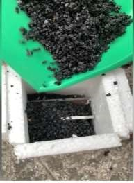
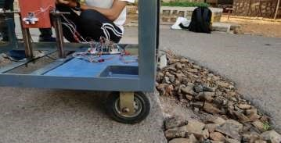
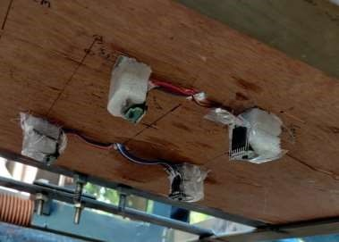
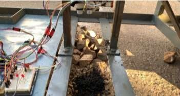
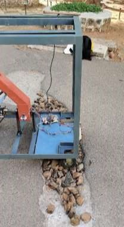
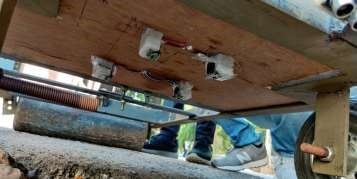

How it works
One fill, start to finish, from the field tests.
-

LOADFill the hopper
Cold-mix asphalt goes into the hopper. The angled chute feeds it down to the rotor.
Material cold-mix asphalt, no heating on site.
-

DRIVEDrive to the pothole
A chain-driven DC motor moves the machine. Ultrasonic sensors at the front pick up the pothole ahead and light an LED.
Drive one motor, chain to the axle at the roller end.
-

SCANMeasure the volume
Four VL53L0X laser sensors in a 2×2 grid under the deck read the depth. The Arduino turns area × depth into a volume.
Output number of rotor turns for this pothole.
-

DISPENSEDispense the material
The stepper turns the 6-fin rotor the set number of times. Each step drops one pocket of material through the chute.
Metered rotations follow the measured volume.
-

LEVELLevel the patch
The roller rolls over the fill and levels it with the road.
Operator one person runs the whole cycle.
-

CHECKCheck the fill
An ultrasonic sensor checks the deposited material, and an LED shows the operator the status.
Done move on to the next pothole.